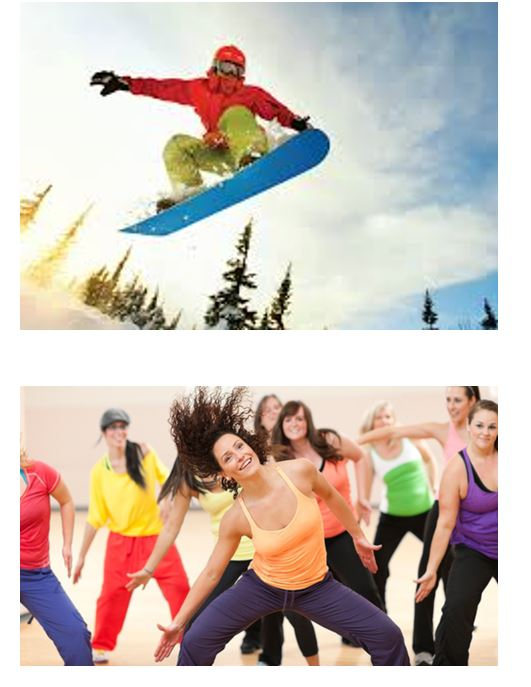
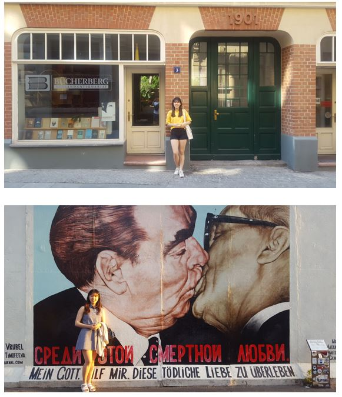

안녕하세요!
성혜가 좋아하는 것들을 담아 만든 홈페이지입니다. 여러 정보들을 담고 있으니 자유롭게 이용해 주세요!
사이트 소개
자기소개: 성혜의 자기소개, 이력서등을 보실 수 있습니다.
운동: 성혜가 좋아하는 운동인 스노우보드, 줌바댄스 등에 대해 보실 수 있습니다.
여행: 성혜의 유럽, 미국, 우즈베키스탄 여행에 대해 보실 수 있습니다.
좋아하는 콘텐츠: 성혜가 좋아하는 드라마, 예능, 게임 등에 대해 보실 수 있습니다.
Contact me: 홈페이지 운영진에게 의견을 보낼 수 있습니다.
 